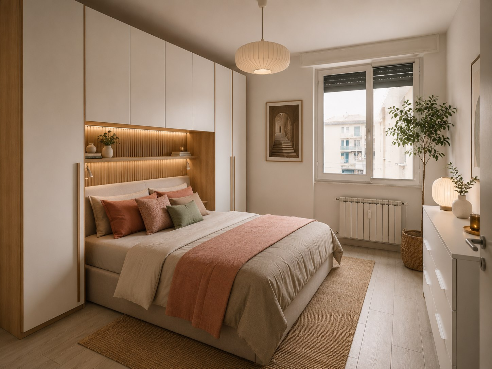
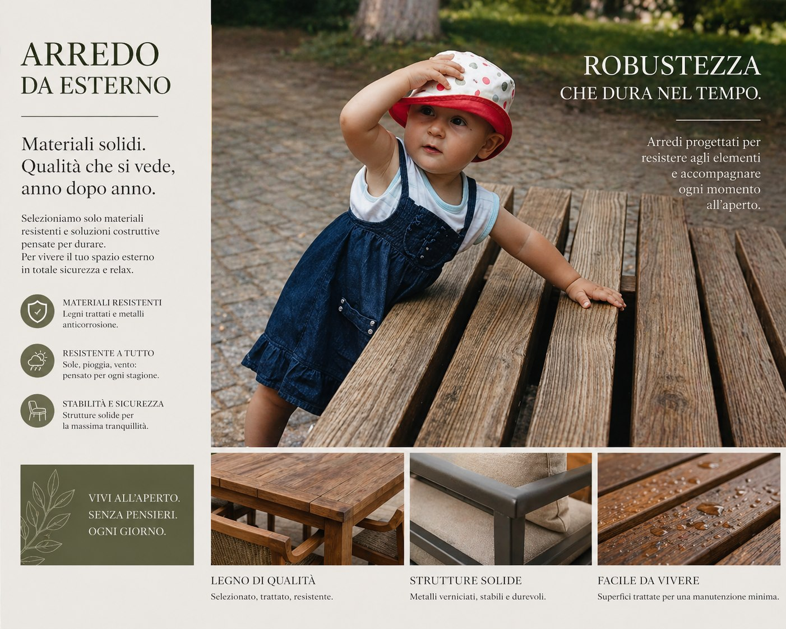
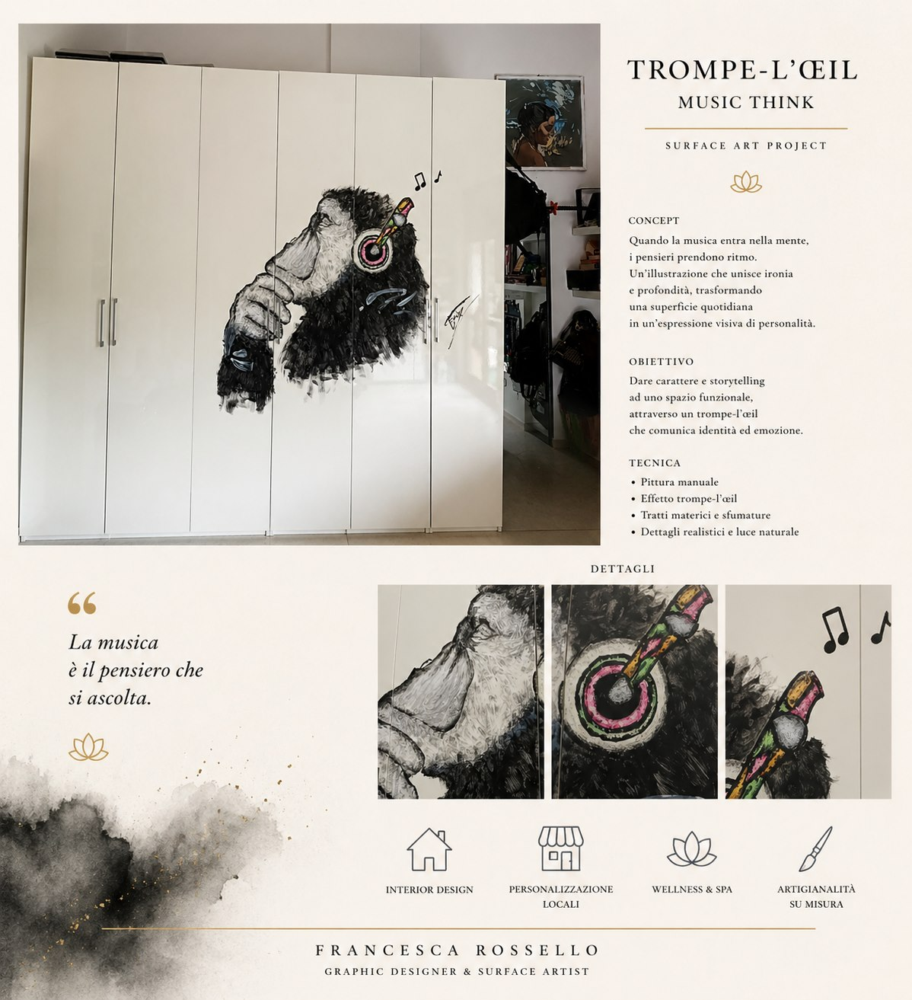

Design ambienti e arredo
Moodboard, palette e direzione visiva per rendere spazi e allestimenti più coerenti e riconoscibili.

Il lavoro
Il design di un ambiente parte da una sensazione: cosa deve comunicare quello spazio a chi entra, lo vive o lo fotografa?
- Definizione di palette, texture e riferimenti visivi.
- Moodboard per ambienti domestici, vetrine, corner e piccoli spazi commerciali.
- Indicazioni grafiche per rendere coerenti arredi, materiali e dettagli decorativi.
- Supporto visivo per presentare un’idea prima della realizzazione.
Il risultato è una direzione estetica più chiara, utile per scegliere materiali, colori e dettagli senza perdere coerenza.
Lavori caricati
Proposte per ambienti, arredo e superfici decorative: ogni immagine mantiene proporzioni originali e leggibilità del progetto.



